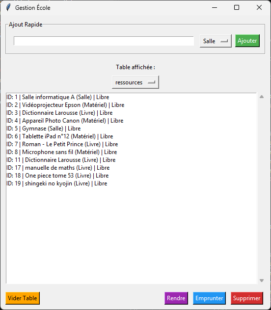

Le projet
Application de bureau qui permet à une école de gérer ses ressources (salles, matériel, livres) et leurs emprunts par les élèves et les professeurs. L'interface graphique est faite avec Tkinter et les données sont enregistrées dans une base SQLite.
Aperçu de l'application

- Ajout rapide d'une ressource avec son type (Salle, Matériel, Livre), avec un message d'erreur si le nom est vide.
- Choix de la table affichée : ressources, emprunts ou utilisateurs.
- Emprunter : une fenêtre s'ouvre pour choisir l'utilisateur. Un objet déjà pris ne peut pas être emprunté.
- Rendre un objet après confirmation : il redevient « Libre ».
- Supprimer une ressource ou vider une table, toujours avec une demande de confirmation.
Organisation du code
Le code est séparé en deux classes :
- GestionInterface construit la fenêtre et réagit aux clics de l'utilisateur.
- Passerelle s'occupe de la base de données : création des tables, ajout, emprunt, retour et suppression, avec des requêtes SQL paramétrées.
Le dossier v1 contient la première version du projet, sans base de données (classes Ressource, utilisateur et Bibliotheque).
Tables de la base de données
ressources
| Colonne | Type |
|---|---|
| id_ressources | INTEGER (clé) |
| nom_ressources | TEXT |
| type_ressources | TEXT |
| etat_ressources | INTEGER (1 = libre) |
emprunt
| Colonne | Type |
|---|---|
| id_emprunt | INTEGER (clé) |
| nom_objet | TEXT |
| nom_users | TEXT |
utilisateurs
| Colonne | Type |
|---|---|
| id_utilisateur | INTEGER (clé) |
| nom / prenom | TEXT |
| TEXT | |
| statut | TEXT |
Code source
from classe.GestionInterface import *
app = GestionInterface()
app.lancer()import tkinter as tk
from tkinter import messagebox, simpledialog
from classe.base_donnee import Passerelle
class GestionInterface:
def __init__(self):
self.db = Passerelle("stockage.db")
#FENETRE INTERFACE
self.app = tk.Tk()
self.app.title("Gestion École")
self.app.geometry("550x600")
#Variables de contrôle
self.variable_type = tk.StringVar(self.app)
self.variable_selection = tk.StringVar(self.app, value="ressources")
#Construction de l'interface
self.setup_ui()
self.actualiser_affichage()
def lancer(self):
self.app.mainloop()
def setup_ui(self):
# Formulaire
cadre_form = tk.LabelFrame(self.app, text="Ajout Rapide", padx=10, pady=10)
cadre_form.pack(pady=10, padx=10, fill="x")
self.entree_nom = tk.Entry(cadre_form)
self.entree_nom.pack(side=tk.LEFT, padx=5, expand=True, fill="x")
types = ["Salle", "Matériel", "Livre"]
self.variable_type.set(types[0])
tk.OptionMenu(cadre_form, self.variable_type, *types).pack(side=tk.LEFT, padx=5)
tk.Button(cadre_form, text="Ajouter", command=self.action_ajouter, bg="#4CAF50", fg="white").pack(side=tk.LEFT)
#Menu Table
tk.Label(self.app, text="Table affichée :").pack(pady=5)
tables = ["ressources", "emprunt", "utilisateurs"]
tk.OptionMenu(self.app, self.variable_selection, *tables, command=self.actualiser_affichage).pack()
#Liste
cadre_liste = tk.Frame(self.app)
cadre_liste.pack(pady=5, padx=10, fill="both", expand=True)
scroll = tk.Scrollbar(cadre_liste)
scroll.pack(side=tk.RIGHT, fill=tk.Y)
self.liste_visuelle = tk.Listbox(cadre_liste, yscrollcommand=scroll.set, height=15)
self.liste_visuelle.pack(side=tk.LEFT, fill="both", expand=True)
scroll.config(command=self.liste_visuelle.yview)
#Boutons Bas
cadre_bas = tk.Frame(self.app)
cadre_bas.pack(side=tk.BOTTOM, fill="x", pady=10, padx=10)
tk.Button(cadre_bas, text="Vider Table", command=self.action_vider, bg="orange").pack(side=tk.LEFT)
tk.Button(cadre_bas, text="Supprimer", command=self.action_supprimer, bg="#d32f2f", fg="white").pack(side=tk.RIGHT, padx=5)
tk.Button(cadre_bas, text="Emprunter", command=self.action_emprunter, bg="#2196F3", fg="white").pack(side=tk.RIGHT, padx=5)
tk.Button(cadre_bas, text="Rendre", command=self.action_rendre, bg="#9C27B0", fg="white").pack(side=tk.RIGHT, padx=5)
#LES FONCTIONS
def actualiser_affichage(self, event=None):
table = self.variable_selection.get()
self.liste_visuelle.delete(0, tk.END)
#Appel via la classe db
donnees = self.db.recuperer_contenu_table(table)
for ligne in donnees:
if table == "ressources":
etat = "Libre" if ligne[3] == 1 else "Pris"
self.liste_visuelle.insert(tk.END, f"ID: {ligne[0]} | {ligne[1]} ({ligne[2]}) | {etat}")
elif table == "utilisateurs":
self.liste_visuelle.insert(tk.END, f"ID: {ligne[0]} | {ligne[1]} {ligne[2]} ({ligne[4]})")
else:
self.liste_visuelle.insert(tk.END, f"ID: {ligne[0]} | {ligne[1]} -> {ligne[2]}")
def action_ajouter(self):
nom = self.entree_nom.get()
type_res = self.variable_type.get()
if nom.strip():
#Appel via la classe db
self.db.ajouter_ressource_manuelle(nom, type_res)
messagebox.showinfo("Succès", f"{nom} ajouté !")
self.entree_nom.delete(0, tk.END)
self.actualiser_affichage()
else:
messagebox.showwarning("Erreur", "Le nom ne peut pas être vide.")
def action_supprimer(self):
try:
index = self.liste_visuelle.curselection()[0]
texte = self.liste_visuelle.get(index)
id_obj = int(texte.split('|')[0].replace('ID:', '').strip())
if messagebox.askyesno("Confirmation", "Supprimer cet élément ?"):
# Appel via la classe db
self.db.supprimer_ressource_db(id_obj)
self.actualiser_affichage()
except IndexError:
messagebox.showwarning("Attention", "Sélectionnez une ligne d'abord.")
def action_emprunter(self):
try:
index = self.liste_visuelle.curselection()[0]
texte_ressource = self.liste_visuelle.get(index)
if self.variable_selection.get() != "ressources":
messagebox.showwarning("Erreur", "Placez-vous sur la table 'ressources' pour emprunter.")
return
if "Pris" in texte_ressource:
messagebox.showerror("Oups", "Cet objet est déjà emprunté !")
return
id_obj = int(texte_ressource.split('|')[0].replace('ID:', '').strip())
nom_obj = texte_ressource.split('|')[1].split('(')[0].strip()
# FENETRE D'INTERFACE POPUP
fenetre_users = tk.Toplevel(self.app)
fenetre_users.title("Qui emprunte ?")
fenetre_users.geometry("300x400")
tk.Label(fenetre_users, text=f"Emprunt de : {nom_obj}", font=("Arial", 10, "bold")).pack(pady=10)
tk.Label(fenetre_users, text="Sélectionnez un utilisateur :").pack()
cadre_liste_u = tk.Frame(fenetre_users)
cadre_liste_u.pack(fill="both", expand=True, padx=10, pady=5)
scroll_u = tk.Scrollbar(cadre_liste_u)
scroll_u.pack(side=tk.RIGHT, fill=tk.Y)
liste_users_box = tk.Listbox(cadre_liste_u, yscrollcommand=scroll_u.set)
liste_users_box.pack(side=tk.LEFT, fill="both", expand=True)
scroll_u.config(command=liste_users_box.yview)
tous_les_users = self.db.recuperer_contenu_table("utilisateurs")
for u in tous_les_users:
liste_users_box.insert(tk.END, f"{u[1]} {u[2]} ({u[4]})")
def valider_choix():
try:
index_u = liste_users_box.curselection()[0]
infos_user = liste_users_box.get(index_u)
nom_final = infos_user.split('(')[0].strip()
reussite = self.db.enregistrer_emprunt(id_obj, nom_obj, nom_final)
if reussite:
messagebox.showinfo("Succès", f"{nom_obj} prêté à {nom_final}.")
self.actualiser_affichage()
fenetre_users.destroy()
else:
messagebox.showerror("Erreur", "Problème lors de l'emprunt.")
except IndexError:
messagebox.showwarning("Attention", "Veuillez sélectionner une personne dans la liste.")
tk.Button(fenetre_users, text="VALIDER L'EMPRUNT", command=valider_choix, bg="#4CAF50", fg="white").pack(pady=10)
except IndexError:
messagebox.showwarning("Attention", "Sélectionnez d'abord un objet à emprunter.")
def action_rendre(self):
try:
index = self.liste_visuelle.curselection()[0]
texte = self.liste_visuelle.get(index)
if self.variable_selection.get() != "ressources":
messagebox.showwarning("Erreur", "Placez-vous sur la table 'ressources' pour rendre un objet.")
return
id_obj = int(texte.split('|')[0].replace('ID:', '').strip())
nom_obj = texte.split('|')[1].split('(')[0].strip()
if "Libre" in texte:
messagebox.showinfo("Info", "Cet objet est déjà libre !")
return
if messagebox.askyesno("Retour", f"Confirmer le retour de : {nom_obj} ?"):
self.db.rendre_ressource(id_obj, nom_obj)
self.actualiser_affichage()
messagebox.showinfo("Succès", "L'objet est rendu.")
except IndexError:
messagebox.showwarning("Attention", "Sélectionnez un objet à rendre.")
def action_vider(self):
table = self.variable_selection.get()
if messagebox.askyesno("Danger", f"Vider toute la table {table} ?"):
self.db.vider_table_complete(table)
self.actualiser_affichage()import sqlite3
class Passerelle:
def __init__(self, db_name="stockage.db"):
"""Constructeur : Initialise le nom de la BDD et crée les tables."""
self.db_name = db_name
self.initialiser_db()
def initialiser_db(self):
"""Crée les tables si elles n'existent pas."""
conn = sqlite3.connect(self.db_name)
curseur = conn.cursor()
#Table Emprunt
curseur.execute('''
CREATE TABLE IF NOT EXISTS emprunt (
id_emprunt INTEGER PRIMARY KEY AUTOINCREMENT,
nom_objet TEXT NOT NULL,
nom_users TEXT NOT NULL
)
''')
#Table Ressources
curseur.execute('''
CREATE TABLE IF NOT EXISTS ressources (
id_ressources INTEGER PRIMARY KEY AUTOINCREMENT,
nom_ressources TEXT NOT NULL,
type_ressources TEXT NOT NULL,
etat_ressources INTEGER DEFAULT 1
)
''')
#Table Utilisateurs
curseur.execute('''
CREATE TABLE IF NOT EXISTS utilisateurs (
id_utilisateur INTEGER PRIMARY KEY AUTOINCREMENT,
nom TEXT NOT NULL,
prenom TEXT NOT NULL,
email TEXT,
statut TEXT
)
''')
conn.commit()
conn.close()
def recuperer_contenu_table(self, nom_table):
conn = sqlite3.connect(self.db_name)
curseur = conn.cursor()
try:
curseur.execute(f"SELECT * FROM {nom_table}")
return curseur.fetchall()
except:
return []
finally:
conn.close()
def ajouter_ressource_manuelle(self, nom, type_res):
conn = sqlite3.connect(self.db_name)
curseur = conn.cursor()
curseur.execute('''
INSERT INTO ressources (nom_ressources, type_ressources, etat_ressources)
VALUES (?, ?, 1)
''', (nom, type_res))
conn.commit()
conn.close()
def verifier_disponibilite(self, id_res):
conn = sqlite3.connect(self.db_name)
curseur = conn.cursor()
curseur.execute("SELECT etat_ressources FROM ressources WHERE id_ressources = ?", (id_res,))
resultat = curseur.fetchone()
conn.close()
if resultat:
etat = resultat[0]
return etat == 1
return False
def enregistrer_emprunt(self, id_res, nom_objet, nom_utilisateur):
"""Enregistre l'emprunt SEULEMENT si l'objet est libre."""
if not self.verifier_disponibilite(id_res):
print("ERREUR: L'objet est déjà emprunté.")
return False
conn = sqlite3.connect(self.db_name)
curseur = conn.cursor()
try:
curseur.execute("INSERT INTO emprunt (nom_objet, nom_users) VALUES (?, ?)", (nom_objet, nom_utilisateur))
curseur.execute("UPDATE ressources SET etat_ressources = 0 WHERE id_ressources = ?", (id_res,))
conn.commit()
print(f"SUCCÈS: {nom_objet} emprunté par {nom_utilisateur}")
return True
except Exception as e:
print(f"ERREUR SQL: {e}")
return False
finally:
conn.close()
def supprimer_ressource_db(self, id_res):
conn = sqlite3.connect(self.db_name)
curseur = conn.cursor()
curseur.execute("DELETE FROM ressources WHERE id_ressources = ?", (id_res,))
conn.commit()
conn.close()
def vider_table_complete(self, nom_table):
conn = sqlite3.connect(self.db_name)
curseur = conn.cursor()
curseur.execute(f"DELETE FROM {nom_table}")
curseur.execute("DELETE FROM sqlite_sequence WHERE name=?", (nom_table,))
conn.commit()
conn.close()
def supprimer_table_definitivement(self, nom_table):
"""Détruit la table et sa structure."""
conn = sqlite3.connect(self.db_name)
curseur = conn.cursor()
curseur.execute(f"DROP TABLE IF EXISTS {nom_table}")
conn.commit()
conn.close()
def rendre_ressource(self, id_res, nom_objet):
"""Met fin à un emprunt."""
conn = sqlite3.connect(self.db_name)
curseur = conn.cursor()
try:
curseur.execute("UPDATE ressources SET etat_ressources = 1 WHERE id_ressources = ?", (id_res,))
curseur.execute("DELETE FROM emprunt WHERE nom_objet = ?", (nom_objet,))
conn.commit()
print(f"Ressource {nom_objet} rendue.")
return True
except Exception as e:
print(f"Erreur retour: {e}")
return False
finally:
conn.close()
if __name__ == "__main__":
db = Passerelle()
print("Base de données initialisée via la classe Passerelle.")from v1.Ressource import Ressource
from v1.utilisateur import utilisateur
class Bibliotheque:
def __init__(self, stockage=None, emprunts=None):
self.stockage = stockage if stockage is not None else []
self.emprunts = emprunts if emprunts is not None else []
def ajouter_ressource(self, nom, type):
if self.trouver_ressource(nom) is not None:
return "Ressource deja existante."
self.stockage.append(Ressource(nom, type, 1))
return "La ressource a ete ajoutee avec succes."
def emprunter(self, nom):
ressource = self.trouver_ressource(nom)
if not ressource in self.stockage:
return "Ressource introuvable."
if ressource.etat == 0:
return "Desolee, cette ressource n'est pas disponible pour le moment."
ressource.etat = 0
self.emprunts.append(nom)
return "La ressource a ete empruntee avec succes."
def rendre(self, nom):
ressource = self.trouver_ressource(nom)
if ressource is None:
return "Ressource introuvable."
if nom not in self.emprunts:
return "Ressource introuvable ou pas empruntee."
if ressource.etat == 1:
return "Cette ressource n'etait pas empruntee."
ressource.etat = 1
self.emprunts.remove(nom)
return "La ressource a ete rendue avec succes."
def afficher_ressources_disponibles(self):
disponibles = [r.nom for r in self.stockage if r.etat == 1]
if not disponibles:
return "Aucune ressource disponible pour le moment."
return "Ressources disponibles: " + ", ".join(disponibles)
def trouver_ressource(self, nom):
for ressource in self.stockage :
if ressource.nom == nom:
return ressource
return Noneclass Ressource:
def __init__(self, nom, type, etat=1):
self.nom = nom
self.type = type
self.etat = etatclass utilisateur:
def __init__(self, nom, prenom, email, classe):
self.nom = nom
self.prenom = prenom
self.email = email
self.classe = classe
def afficher_info(self):
return f"Nom: {self.nom}, Prenom: {self.prenom}, Email: {self.email}"